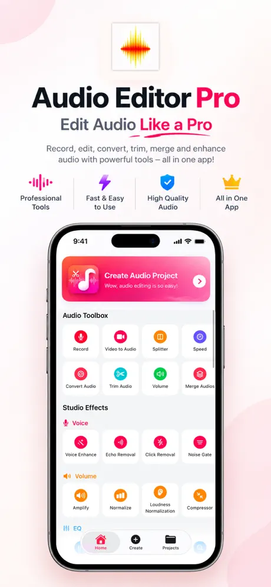
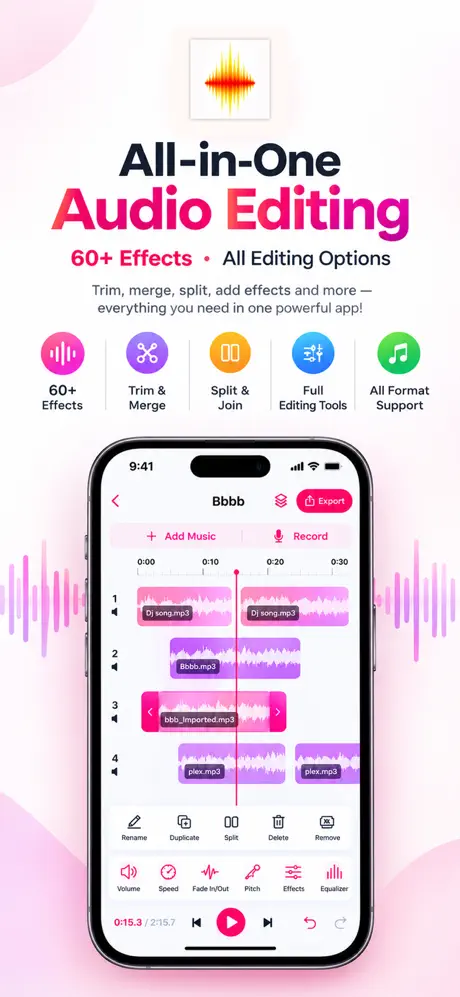
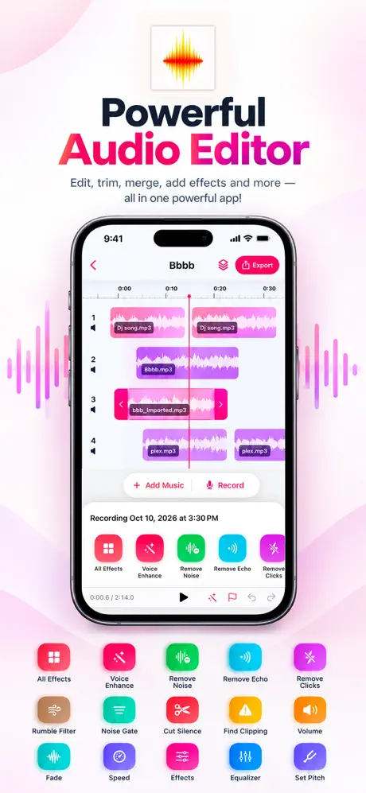
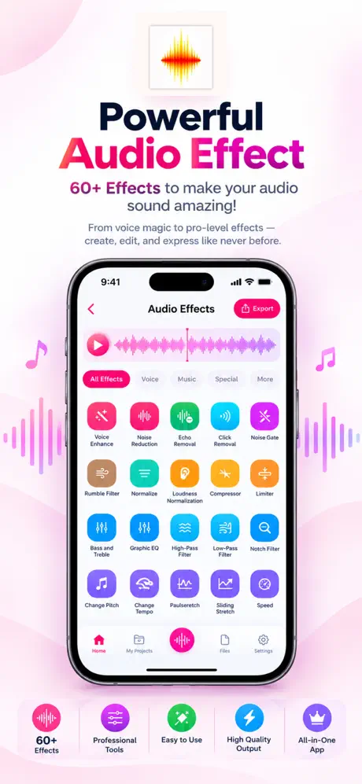
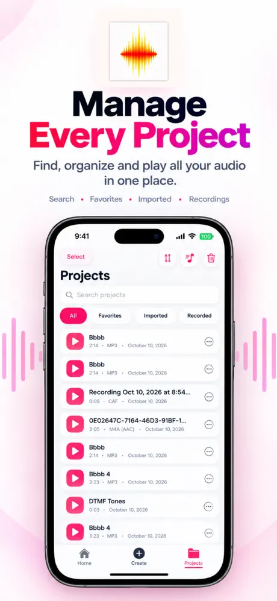
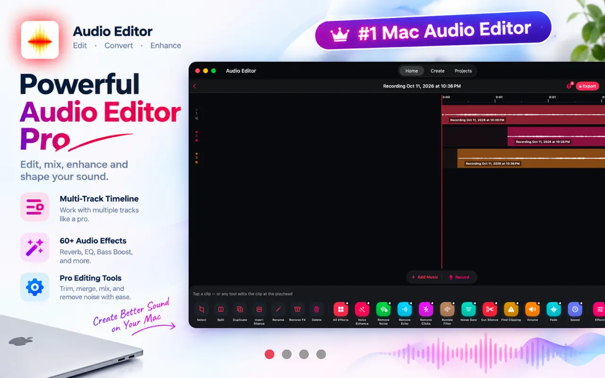
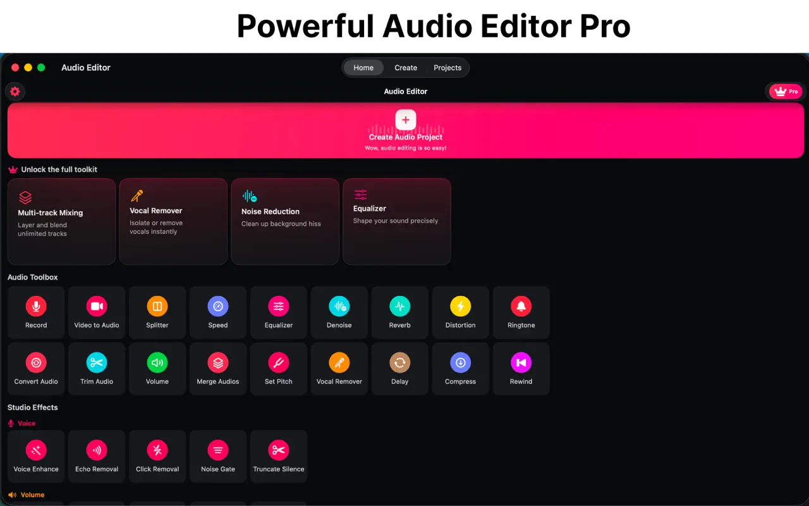

Audio & Music
How to Edit Audio on a Mac
Trim, convert and edit audio on a Mac with QuickTime Player, the Music app and GarageBand, and when a dedicated audio editor is worth it.
Reviewed
A full audio studio for iPhone, iPad and Mac.
Record, trim, clean up and transform audio files with multi-track editing, 60 studio effects and tools, noise reduction, and export to 28 formats.





Screenshots from the official App Store listing.
Audio Edit is a multi-track audio editor for recording voice, importing audio files, or pulling the soundtrack out of a video, then editing it with precise waveform tools.
It includes repair tools such as Noise Reduction, Noise Gate, Click Removal and Echo Removal, plus vocal tools for karaoke or a cappella tracks. Finished work can be exported to formats including MP3, M4A/AAC, WAV, FLAC, ALAC and M4R ringtones.
It is one of two apps in the portfolio with a native Mac version, and the listing states that one Pro subscription works across iPhone, iPad and Mac.
Record your voice into a project, import MP3, M4A, WAV, AIFF, CAF and M4R files, or extract the soundtrack from a video.
Trim, split, cut, copy, paste and merge clips, with fades, looping, speed control, undo/redo and a real-time waveform.
Mix tracks with mute, solo, volume and pan controls.
Reverb, echo, delay, distortion, phaser, tremolo, wah-wah, vocoder, a graphic equalizer, filters, compressor, limiter and loudness normalization.
Noise Reduction, Noise Gate, Click Removal, Echo Removal, Voice Enhance, Find Clipping, Clip Fix and Truncate Silence.
Vocal Remover and Vocal Isolation for karaoke or a cappella versions.
Including MP3, M4A/AAC, WAV, FLAC, ALAC, AIFF, OGG, OPUS, M4B audiobooks and M4R ringtones, with bitrate, bit depth and sample-rate options.
Hear effects in real time before you export.
Features as described on the App Store listing. Some require an in-app purchase.


Yes. The App Store listing includes a Mac version that requires macOS 15.0 or later, alongside iPhone (iOS 18.0+) and iPad (iPadOS 18.0+).
It is free to download with basic editing: trim, split and export your first project. Audio Editor Pro, a weekly, monthly or yearly subscription, unlocks unlimited projects, multi-track mixing, all effects, Noise Reduction, Vocal Remover and maximum-quality export.
The listing names MP3, M4A, WAV, AIFF, CAF and M4R, plus audio extracted from video files.
Audio & Music
Trim, convert and edit audio on a Mac with QuickTime Player, the Music app and GarageBand, and when a dedicated audio editor is worth it.
Reviewed
Audio & Music
Save just the sound from a video on your iPhone as an audio file, using a free Shortcut, an offline converter app, or an audio editor.
Reviewed
Audio & Music
Turn any song clip, voice memo or video sound into an iPhone ringtone or text tone using GarageBand, a Mac, or a ringtone maker app.
Reviewed
Audio & Music
Practical ways to remove hiss, hum and room noise from voice recordings on iPhone and Mac, plus recording habits that prevent noise in the first place.
Reviewed
Audio & Music
Cut the start or end off a recording or audio file on iPhone with Voice Memos, or make precise cuts in the middle with an audio editor.
Reviewed
Audio & Music
Turn any video or audio clip into a custom tone.
Audio & Music
Convert videos on your device to MP3, offline.
Productivity & Business · Audio & Music
Record and transcribe on-device, in real time.